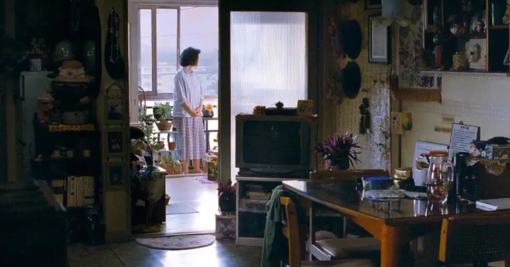

1.《低生育陷阱》
山田昌弘在这本书中分析日本近30年来低生育率的原因和对策的失败，不一定全面，但对于东亚社会的经济压力、典型民族性格和主流阶级话语算是做出了一些总结：
- 进入现代风险社会，严格的人生和职业路径规划，以及风险规避意识，让日本人面对生育这个几乎与不受控制的高风险划等号的事情，不得不慎重起来。
- 在人情社会中，日本人始终抱持着对体面的执着，当生育可能有损自己的体面时，就成为了令人思量的选择。
- 终身雇佣制和战后经济高速发展的阶段一去不复返，下一代难以延续上一代的经济收入与生活质量，人们对育儿资源的投入则进入军备竞赛的模式，这种育儿压力难以纾解。
书中对比了日本沿用欧美模式的低生育对策但却并未发挥同类效用的四大原因——日本社会与欧美社会的四大不同，被忽视了。其中不少内容与《区分》相扣，在这个以中产阶级生活模式为普遍期望的社会中，家长对将孩子养育成人的持续的责任意识和不希望孩子过比自己差的苦日子的中产阶级意识，虽然与欧美社会不太相同，但是也正契合了布迪厄在《区分》里表达的：
生育率，在低收入者中最高，中等收入者最低，到高收入者重新提高。在代际之间上升的机会增加时，生育率则稍微下降。社会上升的野心，使得中产阶级进行与其收入不对等的教育投资。因为他们希望实现这个家庭“被允诺的未来”。
在统治阶级中，生育率猛然增高，表明在只需保持其位置的多种再生产策略系统中，“生物再生产”没能发挥同样的功能。
人们的日常实践模式，并不是在一种持续警醒和普遍有能力的意识中做出的日常选择，而是在阶级习性的不明言的思想和行动模式中，被形塑的。
如果把中产阶级或者所谓的“小资产阶级”当作一个整体来看，那么 ta 们还真的是“一种为了变成资产阶级把自己缩小的无产阶级”，多少有点讽刺。
2. 《艾希曼在耶路撒冷》
这本书应该搭配《平庸之恶》一起阅读。最近几年的那些顿悟时刻，一定有《平庸之恶》一席之位。
“恶的化身未必是狂暴的恶魔，在极权主义统治下，如果缺乏思考力和判断力，每一个普通人都可能成为恶的代言人。”
“如此的远离现实、停止思考，对一个人造成的灾难可能要比这个人自身具有的所有罪恶动机加在一起还要严重。实际上这是人们在耶路撒冷学的一课。”
阿伦特在耶路撒冷得到的震撼，也震撼着今天的我。我曾以为恶是绝对的，有形的。但最近几年的经历就像对“平庸之恶”的一种身体阅读。阿伦特强调艾希曼在道德和智识上的空洞，内心的虚无，艾希曼庭审中语言连贯上的无能同他思考能力的欠缺，或者说缺乏换位思考的能力之间密不可分。他的空洞绝不等同于愚蠢，而是一种“平庸之恶”。我也愈发理解了，很难有所谓的独善其身，不言不语、不思考，做个平庸的人，在那么多的时刻，都等同于助纣为虐。而“知”的限制与隔离，正是培养“平庸之恶”的升级形态。
这些，都成为了出走的动力。

3.《火车》
杰克逊觉得贝尔像是停在了人生的某个阶段，一直是个大孩子。她的谈吐更加深了这种印象，跨度很大，一会儿说起过去，一会儿又跳回现在，他们上一回去镇上、她最后一次同父母一起看电影或者玛格丽特·罗斯——已经死了——用犄角对这担惊受怕的杰克逊那滑稽的一幕，仿佛她根本不觉得这些事情之间有什么间隔。
这一段，让我很动容。因为突然发现自己也是这样，脑海里时常出现的事情，有时候是初中时候独自坐在临街的门口，凝视过往的车辆和行人，脑子里有些抑郁地幻想着有的没的的事情；有时候是最近的工作琐事；有时候又是小时候在上海城郊读书的场景；有时候是模糊的家乡的田埂、桑果和那种害怕被小伙伴落在最后的紧张感；有时候是父亲的摩托车后座，我不切实际的幻想和雨衣潮湿的塑胶味道。
这些事情之间的时间跨度巨大，并且几乎毫无关联，但是我仿佛根本不觉得这些事情之间有什么间隔。
想起那些久远的事情，总有一种寂寥的感觉，那是我的童年。
4.《眼睛》
萨迪，一个家庭女佣的到来，带着一些独立的思想，在“我”的心里占据着特殊的位置。萨迪，是“我”看向成人世界的窗口，但又不至于像母亲那样成熟。萨迪，独自去舞厅跳舞，并且为自己付费，留意着，不在舞池中被各类男性占便宜，警惕着过早走入“温柔乡”。萨迪，多少是带有一些“我”对于成长后世界的向往的。
门罗把这种感受描述得太到位了。在我的成长过程中，也曾经希望有这样的人出现。
在相当长的一段时间里，我不看小说，不知道这种感觉能不能被称之为“不敢看”小说。因为我看小说的时候总是会全身心进入小说里的那个世界，好像那就是在一个我到不了的地方发生的事情。当看完小说的时刻，我会有一种抽身出来重新感受了自己身边的现实的不适感，那种感觉可能是怅然若失，也可能是从那种透明的结界往后退一步的轻微的冲击感。总之我可以清楚地感受到那种透明的两个世界之间的结界，那是一种比果冻要更有韧劲，但比玻璃又更柔软的结界。
我有点害怕那种感觉。